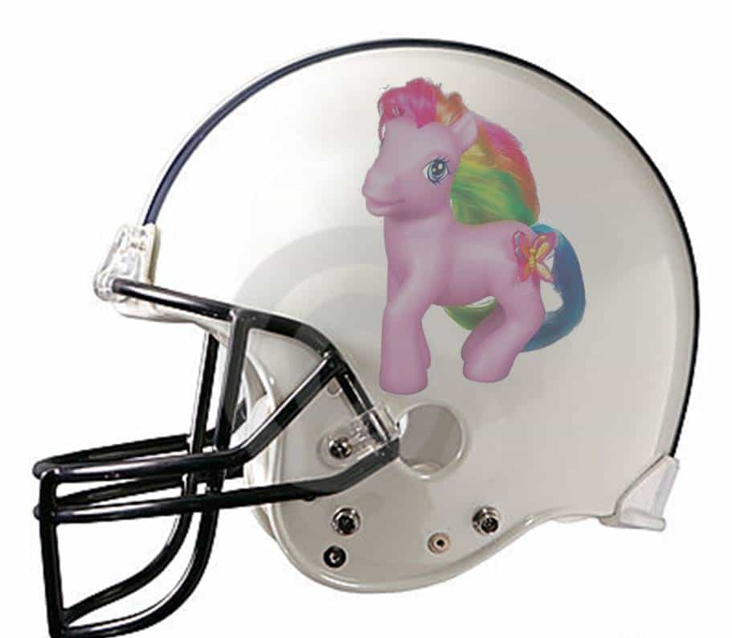

Lou is a management consultant who used to like sports and society but now he doesn't. He has a new blog at cucksports.wordpress.com that gets updated whenever a particularly egregious form of entryism or white knighting takes place.


In the South Park episode “All About Mormons,” several scenes delve into great detail about Mormon orthodoxy while a caption on the bottom of the screen says “This Is What Mormons Actually Believe.” The takeaway is that beliefs such as “seer stones” are so outlandish that it’s amazing that any rational person could actually believe this. This “wow, just wow” view of those with different opinions is, surprisingly, just as applicable to most sports bloggers, who just can’t even believe that the vast majority of sports fans don’t agree with their strong liberal views. Don’t these flyover troglodytes know that it’s 2016?
I’m genuinely unsure if writers in other fields have as much disdain for their core readership as sports bloggers do. Political sites are usually geared towards those with a particular set of views, so outside of hate-reads, regular blog visitors will typically know what they’re getting into. While there might be disagreements, you won’t feel like you’re the enemy. The glaring exception, I suppose, if you’re on a mainstream conservative blog and you just want to #MakeAmericaGreatAgain, but I digress.

Based on Alexa.com’s ratings, the sites that would qualify as the largest pure “American sports blogs” would be Bleacher Report, SB Nation, and Deadspin. These differ from the largest sports websites such as ESPN and SI, since blogs focus on opinion pieces and analysis, not just game previews and highlights.
The largest, Bleacher Report, has different “streams” (almost like sub-reddits) for teams, leagues, and sports. This leads to less long-form writing and more lists and team-specific information. SB Nation (owned by Vox Media), until recently, had their Twitter avatar set to an “It’s On Us” logo, to show solidarity (?) with women who claim to be sexually assaulted.
The same culture that gave us that ridiculous avatar and campaign gave us a circle jerk of concern for the alleged victim in the Patrick Kane rape case. Multiple group posts were promoted to the front of the site which stated that Patrick Kane should be suspended immediately for simply being accused of sexual assault, and that fans who were not as quick to act on this information actually stood in the way of justice.
Patrick Kane, Victim of a Smear Campaign
Furthermore, the fact that he is a famous professional athlete gives him a legion of supporters that an accuser will never have, and those supporters may verbally attack and harass her in support of Kane, thereby making it seem as if the whole world is against her, all part of a culture that could encourage a victim to stay silent.
The piece cited the NHL’s CBA (Collective Bargaining Agreement), which allows for the league to suspend a player based on just an accusation. The writers also leaned on the prior suspension of Slava Voynov as justification, even though Voynov was actually charged with a felony, unlike Kane, who was not charged at all. The tone of the articles were that the NHL, Kane’s teammates, and fans of the league were all supporting “rape culture” and consciously or subconsciously attacking the accuser.
After some searching, I could not find a piece on SB Nation that countered any of these points. Moreover, the articles, which were written by five women, were featured on the website and retweeted by a number of higher profile writers for the site. This leads me to assume that most, if not all, of SB Nation’s writers believe that wearing a Blackhawks jersey is similar to calling all women liars. The charges against Kane were eventually dropped due to a lack of evidence, and SB Nation had a small post which was written by one staffer, and didn’t seem to be retweeted to the heavens by their editors and staffers. Weird.
Deadspin is a whole other can of worms. Being attached to the Gawker network, they have their sports writers sitting next to the writers for Jezebel in their New York City office. I’m going going to out on a limb and say that this probably doesn’t help give a well-rounded, “diverse” set of opinions on sports.
Sportswriters and Feminists, What Could Go Wrong?
This odd seating arrangement also leads Deadspin writers, whether nudged to do so or not, essentially re-blogging thinkpieces from Jezebel. When you go to the main site looking for sports content, you will find promoted articles from Jezebel and other Gawker properties. Oh, and did I mention “Adequate Man,” Deadspin’s guide for average guys to handle such difficult situations as “being white at a black holiday gatherings” and “how to hit on women at the gym” (Spoiler Alert: Never)?
A simple scrolling through their “Racism” tag (certainly needed on a site where some of their writers wrote for the actually racist, and actually once-funny Kissing Suzy Kolber) at http://deadspin.com/tag/racism shows how white people are the worst. Black “personalities” such as Greg Howard and Bomani Jones are there to put them in their place, with white writers tagging along to agree and amplify. At least I get a good sampling of athlete dong pictures in between my large helpings of white guilt, for what that’s worth.
Do You Find This (Relatively) Unrealistic? Misogynist.
As a pro wrestling fan, I’d like to see “news” about my favorite stupid, really poorly written, soap opera nonsense. While not technically sports, it’s close enough that I should expect to be able to see actual news on injuries and upcoming fight cards without a hefty sampling of guilt about, again, being a white guy. Thanks to Uproxx (another multi-channel blog network), though, I can even get my bro-shaming from wrestling articles.
For example, I can read a piece on why black female wrestler “Naomi” is undervalued within WWE (World Wrestling Entertainment) and how that relates to a headline at Slate that referred to Nicki Minaj as a “savage”, and how this all relates to wrestling being a bastion of white guys, with blacks being relegated to stereotypes. Bear in mind, this is professional wrestling, thus every single performer is a stereotype. That’s kind of the point. There’s no “normal dude” wrestler who comes out chill as hell and does his thing and doesn’t try to engage the audience. Everything is over the top because nobody wants to watch regular people wrestle just like they don’t want to watch regular people have sex.
Another thinkpiece, also on Uproxx, details how hard it is for women to make it to the top in the wrestling industry, and that the WWE is losing money by not featuring enough women. For more of a cultural tie-in, they relate it to Saturday Night Live’s “sexism problem” over the past few decades.
There are actually several wrestling writers who work for Uproxx, and none of them remotely come close to the mindset of the average professional wrestling fan. It is a unanimous opinion of the staff that blacks and women are under-represented, storylines should include women fighting and beating men, and that dick jokes, slut-shaming, and the like are the worst parts of the genre.
Pictured: The Enemy
None of these examples are particularly egregious taken individually. I think it’s great that people are getting paid (I’d hope?) something for writing about sports. The main issue that I have is that the opinions are all liberal boilerplate. They’re all safe, and you won’t find an article on the other side, even from a devil’s advocate position. Perhaps something on why maybe teams shouldn’t suspend their players based solely on the whims of women who could ruin their lives with one phone call to the cops, perhaps? I would have loved to have read anything anywhere on how Missouri should have cancelled the scholarships of “striking” football players since that’s the only reason they were even admitted to the school.
There are millions of guys (mostly straight and white) who read about sports every day. Why is it so hard to find well-written content that isn’t overflowing with snarky progressivism, and even harder to find ones that challenge “conventional” wisdom? Are writers for these sites afraid of losing friends in the industry? Is there a blacklist of wrong-thinkers in this and other industries who lose their dream career because they don’t agree with the blue hair tattooed girl at their sister company?
Why have these sports blogs decided to forgo the market of “blog posts most sports fans want to read” to Clay Travis at Fox Sports and the team at Barstool Sports (end of list)? Good for them, but there’s still a market out here that is underserved, and newer sports blogs such as SI’s The Cauldron would be wise to consider at least dipping their toe into the pool. The easy answer is that because the people paying the salaries of writers are progressive (Nick Denton, Markos Moulitsas, et al.), we will continue to get half-assed progressive sports commentary.
For many, sports is an escape from the soul sucking reality of life. So why is the progressive bullhorn the dominant noise, and why is it constantly telling me how shitty we are for liking sports?
Read More: How Fans And The Media Are Making Professional Sports Unbearable